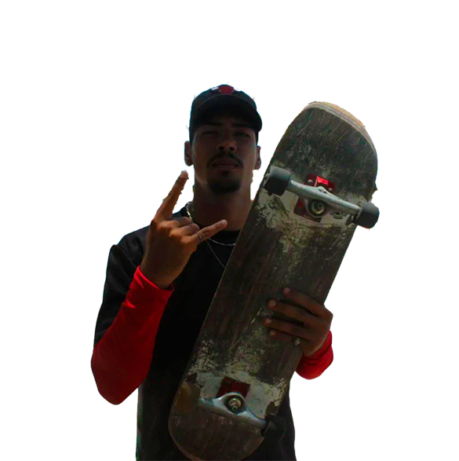
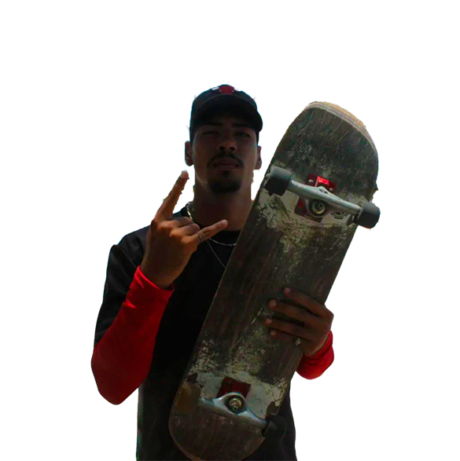

Como o esporte faz parte da minha vida?
O esporte sempre foi mais do que um simples passatempo pra mim — ele é meu combustível diário. Cada corrida, cada treino, cada desafio superado me ensinou a ser mais disciplinado, resiliente e confiante. Nos dias bons, ele me impulsiona. Nos dias ruins, ele me reconstrói. Com o esporte, aprendi a importância de cuidar do meu corpo e da minha mente, e a valorizar cada pequena conquista. É através dele que me mantenho focado, saudável e sempre em evolução.
Por que o esporte precisa estar na sua vida?
Porque o esporte é transformação. Ele não é só sobre ganhar músculos ou correr mais rápido — é sobre se conhecer melhor, vencer seus próprios limites e construir uma rotina mais leve e equilibrada. Com o tempo, você vai perceber que não está só cuidando do seu físico, mas também da sua saúde mental, autoestima e bem-estar. O esporte é uma ferramenta poderosa pra mudar seu dia, seu humor e, com o tempo, sua vida inteira.
Existem muitas versões do Onze — e todas nasceram no esporte. No skate, descobri a leveza de quem se permite errar e tentar de novo. Na luta, aprendi a ter controle, disciplina e respeito. Na corrida, encontrei foco, silêncio e persistência.
 

Cada modalidade desperta uma parte diferente de mim. Algumas mais ousadas, outras mais serenas. Às vezes sou velocidade, às vezes sou estratégia. Às vezes enfrento o mundo, às vezes enfrento só a mim mesmo.